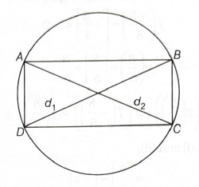
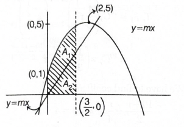

Quick explanation: Use \(\sin C-\sin
D=2\cos\dfrac{C+D}{2}\sin\dfrac{C-D}{2}\). Then
\(\sin9\theta-\sin\theta=0\) becomes
\(2\cos5\theta\sin4\theta=0\), so solve both \(\cos5\theta=0\)
and \(\sin4\theta=0\) in \([0,2\pi]\), avoiding repeated common
solutions.
Bring all terms to one side: \(\sin9\theta-\sin\theta=0\).
Use the identity \(\sin C-\sin
D=2\cos\dfrac{C+D}{2}\sin\dfrac{C-D}{2}\).
Here, \(C=9\theta\) and \(D=\theta\).
So, \(\sin9\theta-\sin\theta=2\cos5\theta\sin4\theta\).
Therefore, \(2\cos5\theta\sin4\theta=0\).
Hence, either \(\cos5\theta=0\) or \(\sin4\theta=0\).
From \(\cos5\theta=0\), we get \(5\theta=\dfrac{(2n+1)\pi}{2}\),
so \(\theta=\dfrac{(2n+1)\pi}{10}\).
In \([0,2\pi]\), this gives \(10\) values:
\(\dfrac{\pi}{10},\dfrac{3\pi}{10},\dfrac{\pi}{2},\dfrac{7\pi}{10},\dfrac{9\pi}{10},\dfrac{11\pi}{10},\dfrac{13\pi}{10},\dfrac{3\pi}{2},\dfrac{17\pi}{10},\dfrac{19\pi}{10}\).
From \(\sin4\theta=0\), we get \(4\theta=n\pi\), so
\(\theta=\dfrac{n\pi}{4}\).
In \([0,2\pi]\), this gives \(9\) values:
\(0,\dfrac{\pi}{4},\dfrac{\pi}{2},\dfrac{3\pi}{4},\pi,\dfrac{5\pi}{4},\dfrac{3\pi}{2},\dfrac{7\pi}{4},2\pi\).
The common values are \(\dfrac{\pi}{2}\) and
\(\dfrac{3\pi}{2}\).
So total number of distinct solutions \(=10+9-2=17\).
Final result: Number of solutions is \(17\).
Simple memory tip: When two sines are equal,
shift everything to one side and use \(\sin C-\sin D\). Then
count solutions carefully and subtract repeats.
Exam shortcut: \(\cos5\theta=0\) gives \(10\)
solutions in \([0,2\pi]\), \(\sin4\theta=0\) gives \(9\)
solutions, and \(2\) are common. So answer \(=17\).
Why the other options are wrong: \(16\),
\(18\), and \(15\) come from miscounting the endpoint solutions
or not subtracting the two common solutions.
Answer: \((b)\ \dfrac{1}{8}\)
Quick explanation: Three fair dice have
\(6^3=216\) total outcomes. Count all ordered triples whose sum
is \(10\); there are \(27\) such outcomes, so the probability is
\(\dfrac{27}{216}=\dfrac{1}{8}\).
BITSAT chapter / topic / subtopic: Probability
\(\rightarrow\) Definition of Probability - Page M114 Probability
\(\rightarrow\) Addition Theorems - Page M114
Total number of outcomes when three dice are thrown is
\(6\times6\times6=216\).
Now count favourable outcomes where the sum is \(10\).
The possible number groups are \(1,3,6\), \(1,4,5\), \(2,2,6\),
\(2,3,5\), \(2,4,4\), and \(3,3,4\).
For \(1,3,6\), all numbers are different, so number of
arrangements \(=3!=6\).
For \(1,4,5\), all numbers are different, so number of
arrangements \(=3!=6\).
For \(2,2,6\), two numbers are same, so number of arrangements
\(=\dfrac{3!}{2!}=3\).
For \(2,3,5\), all numbers are different, so number of
arrangements \(=3!=6\).
For \(2,4,4\), two numbers are same, so number of arrangements
\(=\dfrac{3!}{2!}=3\).
For \(3,3,4\), two numbers are same, so number of arrangements
\(=\dfrac{3!}{2!}=3\).
So favourable outcomes \(=6+6+3+6+3+3=27\).
Required probability \(=\dfrac{27}{216}=\dfrac{1}{8}\).
Final result: Probability \(=\dfrac{1}{8}\).
Simple memory tip: For dice sum problems, first
list unordered combinations, then multiply by arrangements.
Exam shortcut: For sum \(10\) with three dice,
remember the favourable ordered outcomes are \(27\). Since total
is \(216\), probability is \(\dfrac{1}{8}\).
Why the other options are wrong:
\(\dfrac{1}{6}\), \(\dfrac{1}{9}\), and \(\dfrac{1}{5}\) do not
match the favourable-to-total ratio \(\dfrac{27}{216}\).
Answer: \((c)\) of opposite sign
Quick explanation: For \(x^2+bx-c=0\), the
product of roots is \(\dfrac{-c}{1}=-c\). Since \(c>0\), the
product is negative, so the roots must be of opposite signs.
For the quadratic equation \(x^2+bx-c=0\), product of roots is
\(\alpha\beta=\dfrac{-c}{1}=-c\).
Since \(c>0\), \(-c<0\).
So the product of roots is negative.
If product of two roots is negative, then one root is positive
and the other root is negative.
Therefore, the roots are of opposite sign.
Final result: The roots are of opposite sign.
Simple memory tip: Product of roots decides
whether signs are same or opposite. Positive product means same
sign; negative product means opposite sign.
Exam shortcut: Constant term is \(-c\), so
product \(=-c<0\). Directly mark “opposite sign”.
Why the other options are wrong: Both positive
or both negative would give a positive product. Here the product
is negative, so options \((a)\) and \((b)\) are wrong.
Answer: \((d)\ 8abc\)
Quick explanation: Apply AM-GM to each pair:
\(\dfrac{a+b}{2}\ge\sqrt{ab}\), \(\dfrac{b+c}{2}\ge\sqrt{bc}\),
and \(\dfrac{c+a}{2}\ge\sqrt{ca}\). Multiplying gives
\(\dfrac{(a+b)(b+c)(c+a)}{8}\ge abc\), hence
\((a+b)(b+c)(c+a)\ge8abc\). Since \(a,b,c\) are distinct, the
inequality is strict.
BITSAT chapter / topic / subtopic: Algebra
\(\rightarrow\) Linear Inequalities - Page M13 Algebra
\(\rightarrow\) Sequences and Series - Page M6
We know the AM-GM inequality: for positive numbers \(x,y\),
\(\dfrac{x+y}{2}\ge\sqrt{xy}\).
Apply AM-GM to \(a\) and \(b\): \(\dfrac{a+b}{2}\ge\sqrt{ab}\).
Apply AM-GM to \(b\) and \(c\): \(\dfrac{b+c}{2}\ge\sqrt{bc}\).
Apply AM-GM to \(c\) and \(a\): \(\dfrac{c+a}{2}\ge\sqrt{ca}\).
Why the other options are wrong: The AM-GM
comparison gives the strongest direct lower bound \(8abc\), and
because \(a,b,c\) are distinct, the product is strictly greater
than \(8abc\).
Answer: \((a)\) Circle
Quick explanation: Put \(t=\tan\theta\). Then
\(\dfrac{1-\tan^2\theta}{1+\tan^2\theta}=\cos2\theta\) and
\(\dfrac{2\tan\theta}{1+\tan^2\theta}=\sin2\theta\), so
\(x=a\cos2\theta\), \(y=a\sin2\theta\). Hence \(x^2+y^2=a^2\),
which is a circle.
Since \(\cos^22\theta+\sin^22\theta=1\), we get
\(\dfrac{x^2+y^2}{a^2}=1\).
Therefore, \(x^2+y^2=a^2\).
This is the equation of a circle with centre at the origin and
radius \(a\).
Final result: The locus is a circle.
Simple memory tip: The pair
\(\dfrac{1-t^2}{1+t^2}\) and \(\dfrac{2t}{1+t^2}\) usually
represents \(\cos2\theta\) and \(\sin2\theta\) when
\(t=\tan\theta\).
Exam shortcut: Recognise the standard
parametric form \(x=a\cos\phi\), \(y=a\sin\phi\), which directly
gives \(x^2+y^2=a^2\).
Why the other options are wrong: The final
locus is \(x^2+y^2=a^2\), which is a circle, not a parabola,
ellipse, or hyperbola.
Answer: \((a)\ \dfrac{7}{9}\)
Quick explanation: Since \(A+B+C=\pi\), the
half-angles satisfy
\(\dfrac{A}{2}+\dfrac{B}{2}+\dfrac{C}{2}=\dfrac{\pi}{2}\). Hence
\(\tan\dfrac{A}{2}\tan\dfrac{B}{2}+\tan\dfrac{B}{2}\tan\dfrac{C}{2}+\tan\dfrac{C}{2}\tan\dfrac{A}{2}=1\).
BITSAT chapter / topic / subtopic: Trigonometry
\(\rightarrow\) Trigonometric Ratios of Compound Angles - Page
M36 Trigonometry \(\rightarrow\) Trigonometric Ratios of
Multiple and Submultiple Angles - Page M37
Given \(\tan\dfrac{A}{2}=\dfrac{1}{3}\) and
\(\tan\dfrac{B}{2}=\dfrac{2}{3}\).
Let \(\tan\dfrac{C}{2}=x\).
Since \(A,B,C\) are angles of a triangle, \(A+B+C=\pi\).
So, \(\dfrac{A}{2}+\dfrac{B}{2}+\dfrac{C}{2}=\dfrac{\pi}{2}\).
If three angles add up to \(\dfrac{\pi}{2}\), then \(\tan X\tan
Y+\tan Y\tan Z+\tan Z\tan X=1\).
Substitute the values:
\(\dfrac{1}{3}\cdot\dfrac{2}{3}+\dfrac{2}{3}x+x\cdot\dfrac{1}{3}=1\).
This gives \(\dfrac{2}{9}+\dfrac{2x}{3}+\dfrac{x}{3}=1\).
So, \(\dfrac{2}{9}+x=1\).
Therefore, \(x=1-\dfrac{2}{9}=\dfrac{7}{9}\).
Hence, \(\tan\dfrac{C}{2}=\dfrac{7}{9}\).
Final result:
\(\tan\dfrac{C}{2}=\dfrac{7}{9}\).
Simple memory tip: For triangle half-angle
tangent questions, remember: \(xy+yz+zx=1\), where
\(x=\tan\dfrac{A}{2}\), \(y=\tan\dfrac{B}{2}\), and
\(z=\tan\dfrac{C}{2}\).
Exam shortcut: Put the unknown as \(x\) and
directly solve \(\dfrac{2}{9}+\dfrac{2x}{3}+\dfrac{x}{3}=1\).
Why the other options are wrong: Only
\(\dfrac{7}{9}\) satisfies the half-angle identity for a
triangle with the given values.
Answer: \((a)\ a=-2,b=-1\)
Quick explanation: For an orthogonal matrix,
\(AA^T=I\). Since \(A=\dfrac{1}{3}M\), we must have \(MM^T=9I\).
Equating the off-diagonal terms to zero gives \(a+2b=-4\) and
\(a-b=-1\), so \(a=-2,b=-1\).
So,
\(\begin{bmatrix}1&2&2\\2&1&-2\\a&2&b\end{bmatrix}\begin{bmatrix}1&2&a\\2&1&2\\2&-2&b\end{bmatrix}=\begin{bmatrix}9&0&0\\0&9&0\\0&0&9\end{bmatrix}\).
From the \((1,3)\) element, \(a+4+2b=0\).
So, \(a+2b=-4\). Call this equation \((1)\).
From the \((2,3)\) element, \(2a+2-2b=0\).
Divide by \(2\): \(a+1-b=0\), so \(a-b=-1\). Call this equation
\((2)\).
Solving \(a+2b=-4\) and \(a-b=-1\), subtract equation \((2)\)
from equation \((1)\): \(3b=-3\).
So, \(b=-1\).
Using \(a-b=-1\), we get \(a-(-1)=-1\), so \(a=-2\).
Final result: \(a=-2,b=-1\).
Simple memory tip: Orthogonal matrix means rows
and columns behave like perpendicular unit vectors. Here the
factor \(\dfrac{1}{3}\) means dot products must match \(9I\)
before scaling.
Exam shortcut: Instead of multiplying the full
matrix, use row dot products. Row \(1\cdot\) row \(3=0\) gives
\(a+2b=-4\), and row \(2\cdot\) row \(3=0\) gives \(a-b=-1\).
Why the other options are wrong: Only
\(a=-2,b=-1\) makes the required off-diagonal dot products zero,
which is necessary for orthogonality.
Answer: \((c)\) Collinear
Quick explanation: Convert the complex numbers
into points on the Argand plane: \(1+i=(1,1)\),
\(-2+3i=(-2,3)\), and
\(\dfrac{5}{3}i=\left(0,\dfrac{5}{3}\right)\). The slopes
between every pair are equal, so the points are collinear.
The complex number \(1+i\) represents the point \(A(1,1)\).
The complex number \(-2+3i\) represents the point \(B(-2,3)\).
The complex number \(\dfrac{5}{3}i\) represents the point
\(C\left(0,\dfrac{5}{3}\right)\).
Now find the slope of \(AB\):
\(\dfrac{1-3}{1-(-2)}=\dfrac{-2}{3}\).
Find the slope of \(BC\):
\(\dfrac{3-\dfrac{5}{3}}{-2-0}=\dfrac{\dfrac{4}{3}}{-2}=-\dfrac{2}{3}\).
Find the slope of \(CA\):
\(\dfrac{\dfrac{5}{3}-1}{0-1}=\dfrac{\dfrac{2}{3}}{-1}=-\dfrac{2}{3}\).
Since all three slopes are equal, the three points lie on the
same straight line.
Therefore, the points are collinear.
Final result: The points are collinear.
Simple memory tip: A complex number \(x+iy\) is
plotted as the point \((x,y)\) on the Argand plane.
Exam shortcut: To test collinearity quickly,
convert complex numbers to coordinate points and compare slopes.
Why the other options are wrong: Since the
points are collinear, they cannot form an equilateral or
isosceles triangle. Hence option \((c)\) is correct.
Answer: \((d)\) neither \(x\) nor \(y\)
Quick explanation: The scalar triple product
\([\mathbf{a}\ \mathbf{b}\ \mathbf{c}]\) is found by taking the
determinant formed by the components of
\(\mathbf{a},\mathbf{b},\mathbf{c}\). On simplifying, the
determinant becomes \(1\), so it is independent of both \(x\)
and \(y\).
Given \(\mathbf{a}=\hat{i}-\hat{k}\), so
\(\mathbf{a}=(1,0,-1)\).
Given \(\mathbf{b}=x\hat{i}+\hat{j}+(1-x)\hat{k}\), so
\(\mathbf{b}=(x,1,1-x)\).
Given \(\mathbf{c}=y\hat{i}+x\hat{j}+(1+x-y)\hat{k}\), so
\(\mathbf{c}=(y,x,1+x-y)\).
The scalar triple product is \([\mathbf{a}\ \mathbf{b}\
\mathbf{c}]=\mathbf{a}\cdot(\mathbf{b}\times\mathbf{c})\).
It can be written as the determinant
\(\begin{vmatrix}1&0&-1\\x&1&1-x\\y&x&1+x-y\end{vmatrix}\).
Expanding along the first row, \([\mathbf{a}\ \mathbf{b}\
\mathbf{c}]=1\begin{vmatrix}1&1-x\\x&1+x-y\end{vmatrix}-1\begin{vmatrix}x&1\\y&x\end{vmatrix}\).
So, \([\mathbf{a}\ \mathbf{b}\
\mathbf{c}]=\{1+x-y-x(1-x)\}-(x^2-y)\).
This becomes \(1+x-y-x+x^2-x^2+y=1\).
Thus, \([\mathbf{a}\ \mathbf{b}\ \mathbf{c}]\) is independent of
\(x\) and \(y\).
Final result: \([\mathbf{a}\ \mathbf{b}\
\mathbf{c}]\) depends on neither \(x\) nor \(y\).
Simple memory tip: Scalar triple product means
determinant of the three vectors. If all variables cancel, the
value is constant.
Exam shortcut: Form the determinant and expand
using the row with a zero, here \((1,0,-1)\), to reduce
calculation.
Why the other options are wrong: The final
determinant value is \(1\), so it does not depend only on \(x\),
only on \(y\), or on both \(x\) and \(y\).
Answer: \((a)\ \dfrac{4}{3}\)
Quick explanation: Find direction vectors of
both line segments and use projection formula
\(\left|\dfrac{\mathbf{a}\cdot\mathbf{b}}{|\mathbf{b}|}\right|\).
The dot product is \(-4\) and the second vector length is \(3\),
so magnitude of projection is \(\dfrac{4}{3}\).
BITSAT chapter / topic / subtopic: Vectors
\(\rightarrow\) Scalar product or dot product - Page M125 Vectors
\(\rightarrow\) Projection of a vector on a line - Page M126 Three-dimensional
Coordinate Geometry \(\rightarrow\) Distance between two points
- Page M64
The direction vector of the line joining \((3,4,5)\) and
\((4,6,3)\) is \(\mathbf{L_1}=(4-3,\ 6-4,\ 3-5)\).
So, \(\mathbf{L_1}=(1,2,-2)=\hat{i}+2\hat{j}-2\hat{k}\).
The direction vector of the line joining \((-1,2,4)\) and
\((1,0,5)\) is \(\mathbf{L_2}=(1-(-1),\ 0-2,\ 5-4)\).
So, \(\mathbf{L_2}=(2,-2,1)=2\hat{i}-2\hat{j}+\hat{k}\).
The projection of \(\mathbf{L_1}\) on \(\mathbf{L_2}\) is
\(\dfrac{\mathbf{L_1}\cdot\mathbf{L_2}}{|\mathbf{L_2}|}\).
The question asks for magnitude, so take the absolute value:
\(\left|-\dfrac{4}{3}\right|=\dfrac{4}{3}\).
Final result: The magnitude of projection is
\(\dfrac{4}{3}\).
Simple memory tip: Projection means “shadow
length”. Shadow of \(\mathbf{a}\) on \(\mathbf{b}\) is
\(\dfrac{\mathbf{a}\cdot\mathbf{b}}{|\mathbf{b}|}\).
Exam shortcut: Do not form the equation of
either line. Only direction vectors are needed.
Why the other options are wrong: The
denominator is \(|\mathbf{L_2}|=3\), and the magnitude of the
numerator is \(4\), so only \(\dfrac{4}{3}\) fits.
Answer: \((d)\ \sim p\)
Quick explanation: Use De Morgan's law:
\(\sim(p\vee q)=\sim p\wedge\sim q\). Then factor \(\sim p\)
from \((\sim p\wedge\sim q)\vee(\sim p\wedge q)\), giving \(\sim
p\wedge(\sim q\vee q)=\sim p\).
Given expression is \(\sim(p\vee q)\vee(\sim p\wedge q)\).
Using De Morgan's law, \(\sim(p\vee q)=\sim p\wedge\sim q\).
So the expression becomes \((\sim p\wedge\sim q)\vee(\sim
p\wedge q)\).
Now factor out \(\sim p\): \(\sim p\wedge(\sim q\vee q)\).
By complement law, \(\sim q\vee q\) is a tautology, written as
\(t\).
So the expression becomes \(\sim p\wedge t\).
By identity law, \(\sim p\wedge t=\sim p\).
Final result: The Boolean expression is
equivalent to \(\sim p\).
Simple memory tip: De Morgan's law changes
\(\vee\) into \(\wedge\), and negates each part: \(\sim(p\vee
q)=\sim p\wedge\sim q\).
Exam shortcut: After De Morgan's law, look for
a common factor. Here \(\sim p\) is common.
Why the other options are wrong: The simplified
expression is exactly \(\sim p\), not \(p\), \(q\), or \(\sim
q\).
Answer: \((b)\ -\dfrac{1}{2}\)
Quick explanation: First simplify
\(k(k+1)(k-1)=k(k^2-1)=k^3-k\). Then use \(\sum
k^3=\left[\dfrac{n(n+1)}{2}\right]^2\) and \(\sum
k=\dfrac{n(n+1)}{2}\), and compare the coefficient of \(n\).
BITSAT chapter / topic / subtopic: Algebra
\(\rightarrow\) Sequences and Series - Page M6
Let \(S=\sum\limits_{k=1}^{n}k(k+1)(k-1)\).
Since \((k+1)(k-1)=k^2-1\), we get
\(k(k+1)(k-1)=k(k^2-1)=k^3-k\).
So,
\(S=\dfrac{1}{4}n^4+\dfrac{1}{2}n^3-\dfrac{1}{4}n^2-\dfrac{1}{2}n\).
Compare this with \(pn^4+qn^3+tn^2+sn\).
The coefficient of \(n\) is \(s=-\dfrac{1}{2}\).
Final result: \(s=-\dfrac{1}{2}\).
Simple memory tip: Whenever you see
\(k(k+1)(k-1)\), first convert it to \(k^3-k\). It immediately
becomes a standard summation question.
Exam shortcut: Use \(\sum k^3-\sum k\), expand
only enough to identify the coefficient of \(n\).
Why the other options are wrong: The
coefficient of \(n\) in the expanded expression is exactly
\(-\dfrac{1}{2}\), not \(-\dfrac{1}{4}\), \(\dfrac{1}{2}\), or
\(\dfrac{1}{4}\).
Answer: \((c)\ 4\)
Quick explanation: For a binomial distribution,
mean \(=np\) and variance \(=npq\). Given \(np=4\) and
\(npq=3\), we get \(q=\dfrac{3}{4}\), \(p=\dfrac{1}{4}\), and
\(n=16\). Then \((n+1)p=\dfrac{17}{4}=4.25\), so the mode is
\(4\).
BITSAT chapter / topic / subtopic: Probability
\(\rightarrow\) Binomial Distribution - Page M115 Probability
\(\rightarrow\) Mean and Variance of Random Variable - Page M115
For a binomial distribution, mean \(=np\).
Given mean \(=4\), so \(np=4\).
Variance \(=npq\), where \(q=1-p\).
Given variance \(=3\), so \(npq=3\).
Divide variance by mean: \(\dfrac{npq}{np}=\dfrac{3}{4}\).
So, \(q=\dfrac{3}{4}\).
Therefore, \(p=1-q=1-\dfrac{3}{4}=\dfrac{1}{4}\).
Now use \(np=4\): \(n\cdot\dfrac{1}{4}=4\).
So, \(n=16\).
For a binomial distribution, if \((n+1)p\) is not an integer,
mode \(=\lfloor(n+1)p\rfloor\).
Since \(4.25\) is not an integer, mode
\(=\lfloor4.25\rfloor=4\).
Final result: The mode is \(4\).
Simple memory tip: In binomial distribution,
mean \(=np\), variance \(=npq\), and mode depends on \((n+1)p\).
Exam shortcut: First get
\(q=\dfrac{\text{variance}}{\text{mean}}=\dfrac{3}{4}\), then
\(p=\dfrac{1}{4}\), \(n=16\), and \((n+1)p=4.25\).
Why the other options are wrong: The mode comes
from the integer part of \(4.25\), so \(5\), \(6\), and “None of
these” are not correct.
Answer: \((b)\ \dfrac{R^2}{2}\)
Quick explanation: A rectangle inscribed in a
circle has its diagonal equal to the diameter of the circle. The
maximum area occurs when the rectangle is a square, so if
diagonal \(=R\), maximum area \(=\dfrac{R^2}{2}\).
BITSAT chapter / topic / subtopic:
Two-dimensional Coordinate Geometry \(\rightarrow\) Circles -
Page M49 Differential Calculus \(\rightarrow\) Minima and
maxima - Page M77

Let the diameter of the circle be \(R\).
For a rectangle inscribed in a circle, both diagonals of the
rectangle are diameters of the circle.
So, \(d_1=d_2=R\).
The area of a rectangle can also be written using its diagonals
and the angle between them: \(A=\dfrac{1}{2}d_1d_2\sin\theta\).
Since maximum value of \(\sin\theta\) is \(1\), the maximum area
is \(A_{\max}=\dfrac{1}{2}d_1d_2\).
Substitute \(d_1=R\) and \(d_2=R\): \(A_{\max}=\dfrac{1}{2}\cdot
R\cdot R=\dfrac{R^2}{2}\).
Another way to see it: for a fixed diagonal, the rectangle with
maximum area is a square.
If square diagonal is \(R\), then side \(=\dfrac{R}{\sqrt{2}}\),
so area \(=\left(\dfrac{R}{\sqrt{2}}\right)^2=\dfrac{R^2}{2}\).
Final result: Maximum area \(=\dfrac{R^2}{2}\).
Simple memory tip: Rectangle inside a circle
has diagonal equal to the circle's diameter. Maximum rectangle
is a square.
Exam shortcut: For maximum rectangle in a
circle of diameter \(R\), directly use square area
\(=\dfrac{R^2}{2}\).
Why the other options are wrong: \(R^2\) is too
large for a square with diagonal \(R\). \(\dfrac{R^2}{4}\) and
\(\dfrac{R^2}{8}\) are smaller than the maximum possible
rectangle area.
Answer: \((b)\ 41\)
Quick explanation: First find the number of
families having radio or TV: \(1003-63=940\). Then use \(n(R\cup
T)=n(R)+n(T)-n(R\cap T)\), so \(940=794+187-n(R\cap T)\), giving
\(n(R\cap T)=41\).
BITSAT chapter / topic / subtopic: Algebra
\(\rightarrow\) Sets - Page M1 Probability \(\rightarrow\)
Algebra of Events - Page M114
Let \(R\) be the set of families having a radio.
Let \(T\) be the set of families having a TV.
Given \(n(R)=794\), \(n(T)=187\), and total families \(=1003\).
Also, \(63\) families have neither a radio nor a TV.
So, the number of families having at least one of radio or TV is
\(1003-63=940\).
Therefore, \(n(R\cup T)=940\).
Using the set formula, \(n(R\cup T)=n(R)+n(T)-n(R\cap T)\).
Substitute values: \(940=794+187-n(R\cap T)\).
Now, \(794+187=981\).
So, \(940=981-n(R\cap T)\).
Therefore, \(n(R\cap T)=981-940=41\).
Final result: \(41\) families have both a radio
and a TV.
Simple memory tip: “Neither” means outside both
sets. First remove it from total to get “radio or TV”.
Exam shortcut: Both \(=\) radio \(+\) TV \(-\)
at least one \(=794+187-940=41\).
Why the other options are wrong: \(36\) and
\(32\) do not satisfy \(n(R\cup T)=n(R)+n(T)-n(R\cap T)\). Hence
\(41\) is correct.
Quick explanation: Convert \(4x^2-9y^2-1=0\)
into standard hyperbola form:
\(\dfrac{x^2}{1/4}-\dfrac{y^2}{1/9}=1\). Here
\(a=\dfrac{1}{2}\), \(b=\dfrac{1}{3}\), and for
\(\dfrac{x^2}{a^2}-\dfrac{y^2}{b^2}=1\), foci are \((\pm
ae,0)\), where \(e=\sqrt{1+\dfrac{b^2}{a^2}}\).
So, the foci are \(\left(\pm\dfrac{\sqrt{13}}{6},0\right)\).
Final result: Foci
\(=\left(\pm\dfrac{\sqrt{13}}{6},0\right)\).
Simple memory tip: If \(x^2\) term is positive
in the standard hyperbola, foci lie on the \(x\)-axis.
Exam shortcut: Convert to
\(\dfrac{x^2}{1/4}-\dfrac{y^2}{1/9}=1\), then use
\(c^2=a^2+b^2=\dfrac{1}{4}+\dfrac{1}{9}=\dfrac{13}{36}\), so
\(c=\dfrac{\sqrt{13}}{6}\).
Why the other options are wrong: Option \((a)\)
misses the denominator \(6\). Option \((c)\) puts foci on the
\(y\)-axis, but this hyperbola opens along the \(x\)-axis.
Answer: \((d)\ -1\)
Quick explanation: First evaluate the inner
functions. Since \(g\left(\dfrac{8}{5}\right)=\dfrac{8}{5}\),
\(f\left(g\left(\dfrac{8}{5}\right)\right)=\left[\dfrac{8}{5}\right]=1\).
Also,
\(f\left(-\dfrac{8}{5}\right)=\left[-\dfrac{8}{5}\right]=-2\),
so \(g(-2)=2\). Hence the value is \(1-2=-1\).
Simple memory tip: Greatest integer function
always moves left on the number line. So \([-1.6]=-2\), not
\(-1\).
Exam shortcut: For positive numbers,
\([1.6]=1\). For negative decimals, be careful: \([-1.6]=-2\).
Why the other options are wrong: The common
mistake is taking \(\left[-\dfrac{8}{5}\right]\) as \(-1\).
Correctly, it is \(-2\), so the final value is \(-1\).
Answer: \((d)\) The function is not continuous at
\(x=1\)
Quick explanation: Because of \(|x-1|\), split
the function into \(x>1\) and \(x<1\). The left-hand limit
at \(x=1\) becomes infinite, while the right-hand limit becomes
\(\dfrac{1}{2}\), so the function is not continuous at \(x=1\).
Since the one-sided limits are not equal,
\(\lim\limits_{x\to1}f(x)\) does not exist as a finite common
value.
Therefore, \(f(x)\) is not continuous at \(x=1\).
Final result: The function is not continuous at
\(x=1\).
Simple memory tip: Modulus functions must be
split at the point where the expression inside modulus becomes
zero.
Exam shortcut: For \(|x-1|\), check \(x<1\)
and \(x>1\) separately. If LHL and RHL differ, continuity
fails immediately.
Why the other options are wrong: Since the
function is not continuous at \(x=1\), it cannot be continuous
for all values of \(x\), nor continuous at \(x=1\).
Answer: \((c)\ -\dfrac{1}{(1+x)^2}\)
Quick explanation: Rearrange
\(x\sqrt{1+y}=-y\sqrt{1+x}\), then square both sides and
simplify. This gives \(x+y+xy=0\), so \(y=-\dfrac{x}{1+x}\).
Differentiating gives \(\dfrac{dy}{dx}=-\dfrac{1}{(1+x)^2}\).
Move one term to the other side: \(x\sqrt{1+y}=-y\sqrt{1+x}\).
Squaring both sides,
\(\left(x\sqrt{1+y}\right)^2=\left(-y\sqrt{1+x}\right)^2\).
So, \(x^2(1+y)=y^2(1+x)\).
Expanding, \(x^2+x^2y=y^2+xy^2\).
Bring all terms to one side: \(x^2-y^2=x y^2-x^2 y\).
Factor both sides: \((x-y)(x+y)=xy(y-x)\).
Since \(y-x=-(x-y)\), we get \((x-y)(x+y)=-xy(x-y)\).
Cancel the common factor \((x-y)\), giving \(x+y=-xy\).
So, \(x+y+xy=0\).
Now solve for \(y\): \(y(1+x)=-x\).
Therefore, \(y=-\dfrac{x}{1+x}\).
Rewrite \(y=-\dfrac{x}{1+x}=-1+\dfrac{1}{1+x}\).
Differentiate with respect to \(x\):
\(\dfrac{dy}{dx}=0-\dfrac{1}{(1+x)^2}\).
Hence, \(\dfrac{dy}{dx}=-\dfrac{1}{(1+x)^2}\).
Final result:
\(\dfrac{dy}{dx}=-\dfrac{1}{(1+x)^2}\).
Simple memory tip: When square roots are mixed
with \(x\) and \(y\), try isolating one radical term and then
squaring.
Exam shortcut: After squaring, quickly aim to
get \(x+y+xy=0\), then convert it to \(y=-\dfrac{x}{1+x}\).
Why the other options are wrong:
Differentiating \(y=-1+\dfrac{1}{1+x}\) gives
\(-\dfrac{1}{(1+x)^2}\), so the other expressions do not match.
Answer: \((d)\) decreasing in \((0,1)\cup(2,\infty)\)
Quick explanation: Split \(|x-1|\) at \(x=1\).
For \(x\ge1\),
\(f(x)=\dfrac{x-1}{x^2}=\dfrac{1}{x}-\dfrac{1}{x^2}\), and for
\(x<1\),
\(f(x)=\dfrac{1-x}{x^2}=\dfrac{1}{x^2}-\dfrac{1}{x}\). Checking
the derivative signs gives decreasing intervals \((0,1)\) and
\((2,\infty)\).
So, \(f(x)=\dfrac{x-1}{x^2}=\dfrac{1}{x}-\dfrac{1}{x^2}\).
Differentiating,
\(f'(x)=-\dfrac{1}{x^2}+\dfrac{2}{x^3}=\dfrac{2-x}{x^3}\), for
\(x\ge1\).
For \(x<1\), \(|x-1|=1-x\).
So, \(f(x)=\dfrac{1-x}{x^2}=\dfrac{1}{x^2}-\dfrac{1}{x}\).
Differentiating,
\(f'(x)=-\dfrac{2}{x^3}+\dfrac{1}{x^2}=\dfrac{x-2}{x^3}\), for
\(x<1\).
Now check the sign of \(f'(x)\).
For \(0<x<1\), \(x-2<0\) and \(x^3>0\), so
\(f'(x)<0\). Hence \(f\) is decreasing on \((0,1)\).
For \(1<x<2\), \(2-x>0\) and \(x^3>0\), so
\(f'(x)>0\). Hence \(f\) is increasing on \((1,2)\).
For \(x>2\), \(2-x<0\) and \(x^3>0\), so
\(f'(x)<0\). Hence \(f\) is decreasing on \((2,\infty)\).
Therefore, \(f(x)\) is decreasing in \((0,1)\cup(2,\infty)\).
Final result: \(f(x)\) is decreasing in
\((0,1)\cup(2,\infty)\).
Simple memory tip: For modulus-based functions,
first remove the modulus by splitting into cases, then
differentiate.
Exam shortcut: After splitting, remember the
signs: \(f'(x)=\dfrac{x-2}{x^3}\) for \(x<1\), and
\(f'(x)=\dfrac{2-x}{x^3}\) for \(x\ge1\).
Why the other options are wrong: The derivative
is negative on \((0,1)\) and \((2,\infty)\), so these are
decreasing intervals, not increasing intervals.
Answer: \((b)\ -4,2\)
Quick explanation: Since the last three numbers
are in AP with common difference \(6\), write them as
\(a,a+6,a+12\). The first and last numbers are equal, so the
four numbers are \(a+12,a,a+6,a+12\). Since the first three are
in GP, use \(a^2=(a+12)(a+6)\), giving \(a=-4\).
BITSAT chapter / topic / subtopic: Algebra
\(\rightarrow\) Sequences and Series - Page M6
Let the last three numbers in AP be \(a,\ a+6,\ a+12\).
The common difference is \(6\), so this satisfies the AP
condition.
Given that the first and last numbers are equal.
Since the last number is \(a+12\), the first number is also
\(a+12\).
Therefore, the four numbers are \(a+12,\ a,\ a+6,\ a+12\).
Now the first three numbers are in GP: \(a+12,\ a,\ a+6\).
For three numbers in GP, the square of the middle term equals
the product of the first and third terms.
So, \(a^2=(a+12)(a+6)\).
Expanding, \(a^2=a^2+18a+72\).
Cancel \(a^2\) from both sides: \(18a+72=0\).
Thus, \(18a=-72\), so \(a=-4\).
The four numbers are \(a+12,\ a,\ a+6,\ a+12\), so they are
\(8,\ -4,\ 2,\ 8\).
Hence, the two other numbers are \(-4\) and \(2\).
Final result: The two other numbers are
\(-4,2\).
Simple memory tip: For three numbers in GP,
remember: middle squared \(=\) first \(\times\) third.
Exam shortcut: Since last three are AP with
difference \(6\), directly take \(a,a+6,a+12\). Then use
equality of first and last to form \(a+12,a,a+6\) as the GP.
Why the other options are wrong: Only \(-4,2\)
produces the sequence \(8,-4,2,8\), where the first three are in
GP and the last three are in AP with common difference \(6\).
Answer: \((c)\ \dfrac{\pi}{2ab(a+b)}\)
Quick explanation: Split the integrand into
partial fractions using
\(\dfrac{1}{(x^2+a^2)(x^2+b^2)}=\dfrac{1}{a^2-b^2}\left(\dfrac{1}{x^2+b^2}-\dfrac{1}{x^2+a^2}\right)\).
Then use \(\int_0^\infty \dfrac{dx}{x^2+a^2}=\dfrac{\pi}{2a}\).
BITSAT chapter / topic / subtopic: Integral
Calculus \(\rightarrow\) Definite Integrals - Page M90 Integral
Calculus \(\rightarrow\) Some Special Type of Integrals - Page
M88
Let \(I=\int\limits_0^\infty \dfrac{dx}{(x^2+a^2)(x^2+b^2)}\).
Use partial fractions:
\(\dfrac{1}{(x^2+a^2)(x^2+b^2)}=\dfrac{1}{a^2-b^2}\left(\dfrac{1}{x^2+b^2}-\dfrac{1}{x^2+a^2}\right)\).
So,
\(I=\dfrac{1}{a^2-b^2}\int\limits_0^\infty\left(\dfrac{1}{x^2+b^2}-\dfrac{1}{x^2+a^2}\right)dx\).
Now use
\(\int\dfrac{dx}{x^2+a^2}=\dfrac{1}{a}\tan^{-1}\dfrac{x}{a}\).
Final result: \(\int\limits_0^\infty
\dfrac{dx}{(x^2+a^2)(x^2+b^2)}=\dfrac{\pi}{2ab(a+b)}\).
Simple memory tip: For integrals with
\((x^2+a^2)\), expect \(\tan^{-1}\) and the standard value
\(\int_0^\infty \dfrac{dx}{x^2+a^2}=\dfrac{\pi}{2a}\).
Exam shortcut: Remember the direct result:
\(\int_0^\infty
\dfrac{dx}{(x^2+a^2)(x^2+b^2)}=\dfrac{\pi}{2ab(a+b)}\).
Why the other options are wrong: The answer
must contain \(\pi\) and must have denominator \(2ab(a+b)\), so
only option \((c)\) matches the partial fraction result.
Answer: \((a)\ \dfrac{13}{6}\)
Quick explanation: The total bounded area is
\(\int_0^{3/2}(1+4x-x^2)\,dx\). Since \(y=mx\) bisects this
area, the area under \(y=mx\) from \(0\) to \(\dfrac{3}{2}\) is
half of the total area, so
\(\int_0^{3/2}(1+4x-x^2)\,dx=2\int_0^{3/2}mx\,dx\).
BITSAT chapter / topic / subtopic: Integral
Calculus \(\rightarrow\) Area of Bounded Regions - Page M90 Differential
Calculus \(\rightarrow\) Minima and maxima - Page M77

The curve is \(y=1+4x-x^2\).
The bounded region is between \(x=0\), \(y=0\),
\(x=\dfrac{3}{2}\), and the curve.
The line \(y=mx\) bisects the area, so the area above the line
and below the curve equals the area below the line.
Therefore, total area under the curve from \(0\) to
\(\dfrac{3}{2}\) equals twice the area under the line \(y=mx\)
from \(0\) to \(\dfrac{3}{2}\).
So, \(\int_0^{3/2}(1+4x-x^2)\,dx=2\int_0^{3/2}mx\,dx\).
Evaluate the left side:
\(\int(1+4x-x^2)\,dx=x+2x^2-\dfrac{x^3}{3}\).
This becomes \(\dfrac{3}{2}+\dfrac{9}{2}-\dfrac{9}{8}\).
Using denominator \(8\), this is
\(\dfrac{12}{8}+\dfrac{36}{8}-\dfrac{9}{8}=\dfrac{39}{8}\).
Now evaluate the right side:
\(2\int_0^{3/2}mx\,dx=2\left[\dfrac{mx^2}{2}\right]_0^{3/2}=m\left(\dfrac{3}{2}\right)^2=\dfrac{9m}{4}\).
So, \(\dfrac{39}{8}=\dfrac{9m}{4}\).
Multiply by \(8\): \(39=18m\).
Therefore, \(m=\dfrac{39}{18}=\dfrac{13}{6}\).
Final result: \(m=\dfrac{13}{6}\).
Simple memory tip: If a line bisects an area,
set total area \(=2\times\) area on one side.
Exam shortcut: Here the lower split area is
just a triangle/line-area under \(y=mx\), so use \(2\int
mx\,dx\) instead of separately finding both shaded parts.
Why the other options are wrong: Only
\(\dfrac{13}{6}\) satisfies
\(\int_0^{3/2}(1+4x-x^2)\,dx=2\int_0^{3/2}mx\,dx\).
Answer: \((c)\ \dfrac{3y}{x+1}=e^{3x}+C\)
Quick explanation: Divide by \(x+1\) to convert
the equation into linear form:
\(\dfrac{dy}{dx}-\dfrac{y}{x+1}=e^{3x}(x+1)\). The integrating
factor is \(e^{\int -1/(x+1)\,dx}=\dfrac{1}{x+1}\), giving
\(\dfrac{y}{x+1}=\dfrac{e^{3x}}{3}+C'\).
BITSAT chapter / topic / subtopic: Ordinary
Differential Equations \(\rightarrow\) Solution of a
Differential Equation - Page M103
Given differential equation is
\((x+1)\dfrac{dy}{dx}-y=e^{3x}(x+1)^2\).
Divide both sides by \(x+1\):
\(\dfrac{dy}{dx}-\dfrac{y}{x+1}=e^{3x}(x+1)\).
This is a linear differential equation of the form
\(\dfrac{dy}{dx}+Py=Q\).
Here, \(P=-\dfrac{1}{x+1}\) and \(Q=e^{3x}(x+1)\).
The integrating factor is \(IF=e^{\int P\,dx}\).
So, \(IF=e^{\int
-\dfrac{1}{x+1}\,dx}=e^{-\ln(x+1)}=\dfrac{1}{x+1}\).
This simplifies to \(\dfrac{y}{x+1}=\int e^{3x}\,dx\).
Now, \(\int e^{3x}\,dx=\dfrac{e^{3x}}{3}+C'\).
So, \(\dfrac{y}{x+1}=\dfrac{e^{3x}}{3}+C'\).
Multiplying by \(3\), \(\dfrac{3y}{x+1}=e^{3x}+C\), where
\(C=3C'\).
Final result: \(\dfrac{3y}{x+1}=e^{3x}+C\).
Simple memory tip: For linear differential
equations, first make the coefficient of \(\dfrac{dy}{dx}\)
equal to \(1\), then find the integrating factor.
Exam shortcut: After dividing by \(x+1\), the
integrating factor \(\dfrac{1}{x+1}\) cancels the \((x+1)\) on
the right side, making the integral simply \(\int e^{3x}dx\).
Why the other options are wrong: Only option
\((c)\) follows from the integrating factor solution. The other
options do not correctly account for the factor
\(\dfrac{1}{x+1}\).
Answer: \((b)\ 2\)
Quick explanation: Put \(\log_2|x|=t\). Then
the equation becomes \(\sqrt{5-t}=3-t\). Squaring gives \(t=1\)
or \(t=4\), but \(t=4\) is rejected because the right side
becomes negative.
Then the given equation becomes \(\sqrt{5-t}=3-t\).
Since the left side is a square root, it is always non-negative.
So the right side \(3-t\) must also be non-negative.
Therefore, \(3-t\ge0\), so \(t\le3\).
Now square both sides: \(5-t=(3-t)^2\).
Expanding the right side, \(5-t=9-6t+t^2\).
Bring all terms to one side: \(t^2-5t+4=0\).
Factorise: \((t-4)(t-1)=0\).
So, \(t=4\) or \(t=1\).
But \(t=4\) is rejected because \(3-t=3-4=-1\), while a square
root cannot be negative.
Thus, only \(t=1\) is valid.
So, \(\log_2|x|=1\).
This gives \(|x|=2\).
Therefore, \(x=\pm2\).
Hence, there are \(2\) real solutions.
Final result: Number of real solutions \(=2\).
Simple memory tip: When you square an equation
with a square root, always check the solutions again. Squaring
can introduce extra roots.
Exam shortcut: After getting \(t=1,4\),
immediately check \(3-t\). Since \(t=4\) makes the right side
negative, reject it.
Why the other options are wrong: Only \(x=2\)
and \(x=-2\) satisfy the original equation, so the number of
real solutions is \(2\), not \(1\), \(3\), or \(4\).
Answer: \((a)\ 0\)
Quick explanation: Let
\(I=\int_0^{\pi/2}\log(\tan x)\,dx\). Using the property
\(\int_a^b f(x)\,dx=\int_a^b f(a+b-x)\,dx\), we get
\(I=\int_0^{\pi/2}\log(\cot x)\,dx\). Adding both forms gives
\(2I=\int_0^{\pi/2}\log(\tan x\cdot\cot x)\,dx=0\).
Use the definite integral property \(\int_a^b f(x)\,dx=\int_a^b
f(a+b-x)\,dx\).
Here, \(a=0\) and \(b=\dfrac{\pi}{2}\).
So,
\(I=\int\limits_0^{\pi/2}\log\left(\tan\left(\dfrac{\pi}{2}-x\right)\right)\,dx\).
Since \(\tan\left(\dfrac{\pi}{2}-x\right)=\cot x\), we get
\(I=\int\limits_0^{\pi/2}\log(\cot x)\,dx\).
Now add the two forms of \(I\):
\(2I=\int\limits_0^{\pi/2}\left[\log(\tan x)+\log(\cot
x)\right]dx\).
Using \(\log A+\log B=\log(AB)\), we get
\(2I=\int\limits_0^{\pi/2}\log(\tan x\cdot\cot x)\,dx\).
Since \(\tan x\cdot\cot x=1\), this becomes
\(2I=\int\limits_0^{\pi/2}\log1\,dx\).
Now \(\log1=0\).
Therefore, \(2I=0\), so \(I=0\).
Final result: \(\int\limits_0^{\pi/2}\log(\tan
x)\,dx=0\).
Simple memory tip: On
\(\left(0,\dfrac{\pi}{2}\right)\), \(\tan x\) and \(\cot x\)
balance each other under the substitution
\(x\mapsto\dfrac{\pi}{2}-x\).
Exam shortcut: For \(\int_0^{\pi/2}\log(\tan
x)\,dx\), remember the direct result is \(0\).
Why the other options are wrong: The integral
cancels symmetrically after pairing \(\log(\tan x)\) with
\(\log(\cot x)\), so no positive multiple of \(\pi\) is
obtained.
Answer: \((b)\) the constraint are short in number
Quick explanation: To optimise \(n\)
parameters, we generally need at least \(n\) independent
constraints. Here there are \(4\) parameters but only \(3\)
available constraints, so the constraints are insufficient.
BITSAT chapter / topic / subtopic: Linear
Programming \(\rightarrow\) Linear Programming - Page M145 Mathematical
Modeling \(\rightarrow\) Process involved in modeling - Page
M157
Given number of available constraints \(=3\).
Given number of parameters to be optimised \(=4\).
In an optimisation or modelling problem, the constraints
restrict the possible values of the parameters.
To optimise \(n\) parameters properly, we generally need at
least \(n\) effective independent constraints.
Here, the number of constraints is less than the number of
parameters.
So, the available constraints are not enough to fully restrict
the \(4\) parameters.
Therefore, the constraints are short in number.
Final result: The constraint are short in
number.
Simple memory tip: More variables or parameters
need enough restrictions. If constraints are fewer than
parameters, the problem is under-constrained.
Exam shortcut: Compare constraints and
parameters directly: \(3<4\), so constraints are
insufficient.
Why the other options are wrong: The objective
function cannot be confidently optimised with fewer constraints
than required. The key issue is the shortage of constraints, so
option \((b)\) is correct.
Answer: \((c)\ x^2+y^2=2\)
Quick explanation: The circle \(x^2+y^2=4\) has
radius \(2\). If a chord subtends \(90^\circ\) at the origin,
then the perpendicular distance from the origin to the chord's
midpoint is \(2\cos45^\circ=\sqrt{2}\). Hence if the midpoint is
\((h,k)\), then \(h^2+k^2=2\).
So its centre is the origin \(O(0,0)\), and its radius is \(2\).
Let \(AB\) be the chord which subtends a right angle at the
origin.
So, \(\angle AOB=90^\circ\).
Let \(C(h,k)\) be the midpoint of chord \(AB\).
In a circle, the line from the centre to the midpoint of a chord
is perpendicular to the chord.
Thus, \(OC\) is the distance from the centre to the chord.
In right triangle \(OCB\), \(OB=2\), because \(B\) lies on the
circle.
Since \(\angle AOB=90^\circ\), the angle \(\angle
COB=45^\circ\).
Therefore, \(\cos45^\circ=\dfrac{OC}{OB}\).
So, \(\dfrac{1}{\sqrt{2}}=\dfrac{\sqrt{h^2+k^2}}{2}\).
Hence, \(\sqrt{h^2+k^2}=\sqrt{2}\).
Squaring both sides, \(h^2+k^2=2\).
Replacing \(h\) by \(x\) and \(k\) by \(y\), the locus is
\(x^2+y^2=2\).
Final result: The locus is \(x^2+y^2=2\).
Simple memory tip: For a chord subtending angle
\(2\alpha\) at the centre, distance from centre to chord is
\(r\cos\alpha\). Here \(2\alpha=90^\circ\), so
\(\alpha=45^\circ\).
Exam shortcut: Radius \(=2\), half-angle
\(=45^\circ\), so midpoint distance from origin
\(=2\cos45^\circ=\sqrt{2}\). Therefore, locus is radius-square
\(2\).
Why the other options are wrong: The midpoint
traces a circle centred at the origin with radius \(\sqrt{2}\),
so its equation is \(x^2+y^2=2\), not a line or a circle with
radius \(1\).
Answer: \((b)\ \dfrac{10!}{24}\)
Quick explanation: First choose which \(4\)
people sit at one table and which \(6\) sit at the other table.
Then arrange each group around a round table using circular
permutation: \(4\) people can be arranged in \((4-1)!\) ways and
\(6\) people in \((6-1)!\) ways.
Final result: The number of ways is
\(\dfrac{10!}{24}\).
Simple memory tip: For a round table, one
rotation is counted the same, so \(n\) people around a round
table are arranged in \((n-1)!\) ways.
Exam shortcut: Use group selection
\(\dfrac{10!}{4!6!}\), then multiply by circular arrangements
\(3!\cdot5!\). Most terms cancel quickly to \(\dfrac{10!}{24}\).
Why the other options are wrong: Option \((a)\)
ignores circular arrangement cancellation correctly, and option
\((c)\) loses an extra factor. The correct simplified value is
\(\dfrac{10!}{24}\).
Quick explanation: The angle of depression to
the bottom of the tower is \(45^\circ\), so the horizontal
distance between cliff and tower is \(50\ \mathrm{m}\). Then
using the \(30^\circ\) depression to the top of the tower,
\(\tan30^\circ=\dfrac{50-h}{50}\), giving
\(h=50\left(1-\dfrac{\sqrt{3}}{3}\right)\).
Final result: Height of tower
\(=50\left(1-\dfrac{\sqrt{3}}{3}\right)\ \mathrm{m}\).
Simple memory tip: Angle of depression from the
observer equals angle of elevation from the object.
Exam shortcut: Use the \(45^\circ\) depression
first; it immediately gives horizontal distance \(=50\). Then
apply \(\tan30^\circ\) for the height difference.
Why the other options are wrong: Options
\(50\), \(50\sqrt{3}\), and \(50(\sqrt{3}-1)\) do not satisfy
\(\tan30^\circ=\dfrac{50-h}{50}\).
Answer: \((d)\ -\dfrac{1}{4}\)
Quick explanation: Recognise the inverse
tangent identity:
\(\tan^{-1}\left(\dfrac{u-v}{1+uv}\right)=\tan^{-1}u-\tan^{-1}v\).
Here \(u=\sqrt{x}\) and \(v=x\), so
\(y=\tan^{-1}\sqrt{x}-\tan^{-1}x\).
Simple memory tip: If you see
\(\dfrac{u-v}{1+uv}\) inside \(\tan^{-1}\), think
\(\tan^{-1}u-\tan^{-1}v\).
Exam shortcut: Do not differentiate the big
fraction directly. First simplify using inverse tangent
subtraction identity.
Why the other options are wrong: Direct
differentiation after simplification gives \(-\dfrac{1}{4}\), so
\(0\), \(\dfrac{1}{2}\), and \(-1\) are not correct.
Answer: \((a)\ \dfrac{70}{243}\)
Quick explanation: Write the general term of
\(\left(\dfrac{1}{3}x^{1/2}+x^{-1/4}\right)^{10}\). The power of
\(x\) in the \((r+1)\)th term is
\(\dfrac{10-r}{2}-\dfrac{r}{4}\). Set this equal to \(2\), which
gives \(r=4\).
Final result: Coefficient of \(x^2\) is
\(\dfrac{70}{243}\).
Simple memory tip: In binomial coefficient
questions, first find which term gives the required power of
\(x\), then calculate only that coefficient.
Exam shortcut: Solve the exponent equation
\(\dfrac{10-r}{2}-\dfrac{r}{4}=2\) first. Once \(r=4\),
coefficient is simply \({}^{10}C_4/3^6\).
Why the other options are wrong: The required
coefficient comes from \(r=4\) and equals \(\dfrac{70}{243}\),
so the other numerical options do not match.
Answer: \((c)\ \dfrac{1}{2}\)
Quick explanation: Since \(a,c,b\) are in GP,
the middle term squared equals the product of the extremes, so
\(c^2=ab\). The line \(ax+by+c=0\) cuts the axes at
\(\left(-\dfrac{c}{a},0\right)\) and
\(\left(0,-\dfrac{c}{b}\right)\), so the area is
\(\dfrac{1}{2}\cdot\dfrac{c^2}{ab}=\dfrac{1}{2}\).
For three terms in GP, the square of the middle term equals the
product of the first and third terms.
So, \(c^2=ab\).
The given line is \(ax+by+c=0\).
To find the \(x\)-intercept, put \(y=0\): \(ax+c=0\), so
\(x=-\dfrac{c}{a}\).
Thus, the line meets the \(x\)-axis at
\(\left(-\dfrac{c}{a},0\right)\).
To find the \(y\)-intercept, put \(x=0\): \(by+c=0\), so
\(y=-\dfrac{c}{b}\).
Thus, the line meets the \(y\)-axis at
\(\left(0,-\dfrac{c}{b}\right)\).
The triangle is formed by the line and the two coordinate axes.
Area of this triangle is
\(\dfrac{1}{2}\times\left|\text{x-intercept}\right|\times\left|\text{y-intercept}\right|\).
So, area
\(=\dfrac{1}{2}\left|-\dfrac{c}{a}\right|\left|-\dfrac{c}{b}\right|\).
This gives area \(=\dfrac{1}{2}\cdot\dfrac{c^2}{ab}\).
Since \(c^2=ab\), area
\(=\dfrac{1}{2}\cdot\dfrac{ab}{ab}=\dfrac{1}{2}\).
Final result: The area is \(\dfrac{1}{2}\).
Simple memory tip: For a line \(ax+by+c=0\),
the intercepts are \(-\dfrac{c}{a}\) and \(-\dfrac{c}{b}\).
Exam shortcut: Directly use area
\(=\dfrac{1}{2}\cdot\dfrac{c^2}{ab}\), and GP gives \(c^2=ab\).
Why the other options are wrong: The GP
condition fixes the area as \(\dfrac{1}{2}\), so \(1\), \(2\),
and “None of these” are not correct.
Answer: \((a)\ -1\)
Quick explanation: A homogeneous system has a
non-trivial solution only when the determinant of its
coefficient matrix is zero. Expanding the determinant gives
\(pqr+pqc+prb+qra=0\), and dividing by \(pqr\) gives
\(1+\dfrac{c}{r}+\dfrac{b}{q}+\dfrac{a}{p}=0\).
Final result:
\(\dfrac{a}{p}+\dfrac{b}{q}+\dfrac{c}{r}=-1\).
Simple memory tip: For a homogeneous system,
“non-trivial solution” means determinant \(=0\).
Exam shortcut: Form the determinant and expand
carefully; after simplification, divide by \(pqr\) to directly
get the required expression.
Why the other options are wrong: The
determinant condition gives the exact value \(-1\), so \(0\),
\(1\), and \(2\) are not correct.
Answer: \((c)\ \dfrac{4^n+(-2)^n}{n!}\)
Quick explanation: First simplify
\(\dfrac{e^{7x}+e^x}{e^{3x}}=e^{4x}+e^{-2x}\). In the expansion
of \(e^{ax}\), the coefficient of \(x^n\) is
\(\dfrac{a^n}{n!}\), so the required coefficient is
\(\dfrac{4^n+(-2)^n}{n!}\).
Given expression is \(\dfrac{e^{7x}+e^x}{e^{3x}}\).
Split the denominator:
\(\dfrac{e^{7x}}{e^{3x}}+\dfrac{e^x}{e^{3x}}\).
This gives \(e^{4x}+e^{-2x}\).
Now use the expansion
\(e^u=1+\dfrac{u}{1!}+\dfrac{u^2}{2!}+\dfrac{u^3}{3!}+\cdots\).
For \(e^{4x}\), the coefficient of \(x^n\) is
\(\dfrac{4^n}{n!}\).
For \(e^{-2x}\), the coefficient of \(x^n\) is
\(\dfrac{(-2)^n}{n!}\).
Therefore, in \(e^{4x}+e^{-2x}\), the coefficient of \(x^n\) is
\(\dfrac{4^n}{n!}+\dfrac{(-2)^n}{n!}\).
So, coefficient of \(x^n=\dfrac{4^n+(-2)^n}{n!}\).
Final result: The coefficient of \(x^n\) is
\(\dfrac{4^n+(-2)^n}{n!}\).
Simple memory tip: In \(e^{ax}\), the
coefficient of \(x^n\) is always \(\dfrac{a^n}{n!}\).
Exam shortcut: Simplify the exponential
expression first; do not expand before reducing it to
\(e^{4x}+e^{-2x}\).
Why the other options are wrong: The powers
must be \(4^n\) and \((-2)^n\), because the simplified exponents
are \(4x\) and \(-2x\).
Answer: \((a)\ 3\)
Quick explanation: Let \(z=x+iy\). The equation
\(|z+3-i|=1\) represents a circle \((x+3)^2+(y-1)^2=1\). Also,
\(\arg(z)=\pi\) means \(z\) lies on the negative real axis, so
\(y=0\). Substituting gives \(x=-3\), hence \(|z|=3\).